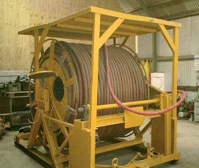
Für den benötigten Energiebedarf von Tunnelbaustellen werden in der Regel komplexe Hochspannungsanlagen benötigt. Sie setzen sich zusammen aus Übergabestationen, stationären Transformatorstationen für den Einsatz über und unter Tage und rückbaren Transformatorstationen für den Einsatz im Vortrieb unter Tage.
Auf Tunnelbaustellen sind bei der Errichtung der elektrischen Anlagen unter Tage u. a. die Anforderungen der VDE 0118//ÖVE E 18 zu beachten. Die dort definierten Schutzziele können durch den Einsatz eines Hochspannungsleitungswächters (H-Wächter) erreicht werden (siehe 3.1.1).
Werden die Schaltanlagen mit Hilfsenergie betrieben, sind ausreichende Hilfsenergiequellen (z. B. USV Anlagen) vorzusehen, die bei Netzausfall unverzögert wirksam werden.
Die Erdungsanlagen sind entsprechend VDE 0101//ÖVE/ÖNORM E 8383 (HD 637) und VDE 0118//ÖVE E 18 auszuführen.
Für den sicheren Betrieb sind die erforderliche Dokumentation und das Zubehör der Hochspannungsanlagen vom Errichter bereitzustellen. Art und Umfang sind zwischen Errichter und Betreiber abzustimmen.
Der Betrieb (Bedienen und Arbeiten) ist nur durch autorisierte und eingewiesene Elektrofachkräfte mit Schaltberechtigung zulässig.
Übergabestationen, vorzugsweise in Containerbauweise mit begehbarem Innenraum, beinhalten Hochspannungsanlagen für die Übernahme und Messung der elektrischen Energie aus dem Netz des Energieversorgers (EVU) und der Verteilung in das örtliche Baustromnetz.
Die Schaltanlagentechnik und die Messung sind entsprechend den technischen Anschlussbedingungen (TAB) des örtlichen EVUs auszuführen.
Übergabestationen können auch in Kombination mit Transformatoren und Niederspannungsverteilungen ausgeführt werden.
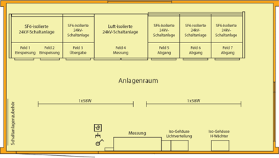
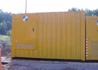
Transformatorstationen werden vorzugsweise in Containerbauweise mit begehbarem Innenraum ausgeführt. Sie bestehen aus typgeprüften Hoch- und Niederspannungsschaltanlagen, aus Transformatoren und bei Bedarf auch aus Kompensationsanlagen.
Bei der Auswahl der Transformatoren sind die örtlichen Einsatzbedingungen zu berücksichtigen (z. B. Umgebungstemperatur, Tropfwasser, Staub).
Die Kompensationsanlagen sind auf die nachgeschalteten Verbrauchsmittel (z.B. frequenzgesteuerte Betriebsmittel) abzustimmen.
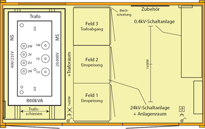
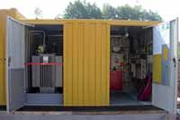
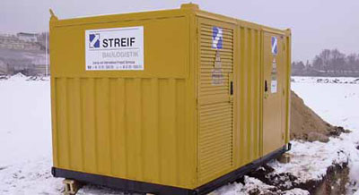
4.1.2.1 Stationäre Transformatorstationen für den Einsatz über Tage
Bei der Wahl des Aufstellungsortes müssen die Umgebungsbedingungen berücksichtigt werden (Temperatur, Hochwassergefahr, Lawinengefahr, Steinschlag, u.a.). Es können flüssigkeitsgefüllte Transformatoren, Gießharztransformatoren oder Trockentransformatoren eingesetzt werden.
4.1.2.2 Transformatorstationen für den Einsatz unter Tage
Für den Einsatz unter Tage haben sich stationäre und rückbare Transformatorstationen bewährt. Rückbare Transformatorstationen sind vorwiegend in Kompaktbauweise ausgeführt und entsprechend den erschwerten Einsatzbedingungen dimensioniert. Es sind ausschließlich Gießharztransformatoren, Trockentransformatoren und Transformatoren mit Silikonisolierflüssigkeit zulässig.
Transformatoren müssen im Schadensfall durch eine schnellwirkende Schutzeinrichtung allpolig abgeschaltet werden.
Der Anschluss der Transformatorstationen unter Tage (Kabel, Leitungen und Verbindungstechnik) ist entsprechend den Abschnitten 3.2, 4.5 und 4.7 vorzunehmen.
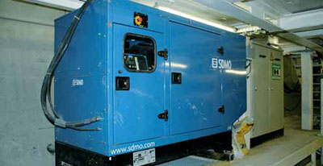
Die Erdungsanlagen der Transformatorstationen sind in die örtlichen Potentialsteuerungen einzubeziehen.
Je nach den örtlichen Verhältnissen können in den jeweiligen Transformatorstationen zusätzliche Brandschutz-, Lösch- und Meldeeinrichtungen erforderlich sein.
Netzersatzanlagen auf Tunnelbaustellen dienen bei Ausfall der primären Energieversorgung der Versorgung sicherheitsrelevanter Einrichtungen und Verbrauchsmittel.
Die Anlagen sind gemäß den Einsatzbedingungen, dem Energiebedarf und dem Anlaufverhalten der zu versorgenden Verbrauchsmittel auszuwählen (s. BGI 867).
Die Zu- und Abschaltung des Netzersatzbetriebes kann bei Bedarf (z.B. für Tunnelbeleuchtung, Bewetterung) über automatische Umschalteinrichtungen gewährleistet werden. Die maximalen Umschaltzeiten ergeben sich durch die örtlichen Erfordernissen (siehe z. B. DruckluftV, ArbStättV).
Akkumulatorladestationen sind Räume, in denen nicht gasdichte Akkumulatoren und Batterien vorübergehend zum Laden aufgestellt werden. Nicht gasdichte Akkumulatoren und Batterien werden u.a. zum Betrieb elektrischer Großgeräte verwendet.
Das beim Laden austretende Gas bildet mit Luft ein zündfähiges explosibles Gemisch.
Um Gefährdungen zu vermeiden, sind folgende Mindestforderungen einzuhalten:
Grundsätzlich dürfen nur typgeprüfte Schaltanlagen und Baustromverteiler nach VDE 0660-500 und -501//ÖVE/ÖNORM EN 60439-1 und -4 eingesetzt werden.
Bei der Auswahl der Starkstromleitungen für Tunnelbaustellen sind die hohen mechanischen Beanspruchungen und der geplante Einsatzzweck besonders zu beachten.
Leitungen sind geschützt zu verlegen, z.B. durch:
Gegebenenfalls sind die Leitungen auch vor thermischen oder chemischen Einwirkungen zu schützen bzw. in ihrem Aufbau den jeweiligen Anforderungen anzupassen.
Die Auswahl der Kabel und Leitungen ist nach folgenden Kriterien vorzunehmen:
Bewegliche Leitungen, ausgenommen Geräteanschlussleitungen, müssen Gummischlauchleitungen entsprechend VDE 0298 sein. Je nach Anwendungsfall sind die Bauarten H07RN-F, NSSHÖU oder mindestens gleichwertige gefordert.
Kabel und Leitungenmit Kunststoffisolierung sind auf Baustellen nur bedingt und ausschließlich bei fester und geschützter Verlegung zulässig.
Die Bauart der Leitung ist unter Berücksichtigung folgender Parameter auszuwählen:
Übersicht häufig angewendeter Kabel und Leitungen in Abhängigkeit von unterschiedlichen Einsatzbedingungen
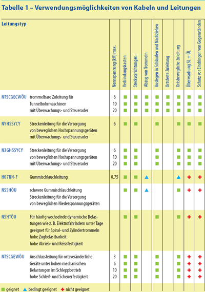
Flexible Leitungen werden entsprechend der Anordnung und Ausführung des Schutzleiters in drei Bauarten unterschieden.
Die Verwendungsmöglichkeiten von Kabeln und isolierten Leitungen sind in der Normenreihe VDE 0298 geregelt.
Die Bauarten II und III ergeben durch die Ausführung des Schutzleiters als konzentrischer oder einzelkonzentrischer Leiter einen Berührungsschutz von außen. Wenn das Eindringen von metallischen Gegenständen von außen (z.B. beim Sprengen) vor Erreichen des Außenleiters zusätzlich eine Abschaltung des Netzes ergeben soll, muss eine Doppelschirmausführung gewählt werden, wobei der zweite Schirm gegenüber dem Schutzleiter mit einer Spannung beaufschlagt wird. Dieser Schirm wird Überwachungsschirm genannt. Die Ausführung mit zwei Schirmen ist dann zu wählen, wenn mit dem Auftreten von explosiblen Gasen gerechnet werden muss. Bei Überwachung des Schutzleiters auf Unterbrechung ist ebenfalls ein Überwachungsleiter erforderlich, der aber als Einzelader im Querschnitt der Leitung oder des Kabels angeordnet sein kann.
Hohe Zugspannungen (z. B. Abziehen der Leitungen von Trommeln, frei hängende Leitungen und Kabel in Schächten) können durch zusätzlich angeordnete, konzentrische Stahlgeflechtbewehrungen um Energieadern und Schutzleiter aufgenommen werden.
Bauart III kann variiert werden, indem Abschirmungen über den Energieadern durch leitende Gummi- oder Kunststoffschichten ersetzt werden.
Die Bauarten II und III werden vorrangig für Spannungen über 1 kV eingesetzt. Für Nennspannungen >6 kV sind diese Leitungsarten mit zusätzlichen Leitschichten aufgebaut.
Dabei hat die äußere Leitschicht als Aderschirm unter anderem folgende Aufgaben:
Der Aderschirm ist Bestandteil des Schutzleiters.
Die einzeln isolierten Außenleiter sind zusammen mit dem als isolierte Einzelader ausgeführten Schutzleiter verseilt. Der Außenmantel kann durch einvulkanisierte Textillagen verstärkt sein.
Diese Bauart kann je nach Ausführung in Systemen mit einer Nennspannung bis zu 750 V / 1000 V eingesetztwerden.
Beispiele:
H07RN-F, NSSHÖU, NSHTÖU u.a.
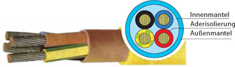
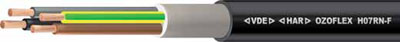
Leitungen dieser Bauart sind bestimmt für den beweglichen Anschluss von Elektrogeräten bei mittleren mechanischen Beanspruchungen in Innenräumen und im Freien.
Sie können verwendet werden:
Diese Leitungsausführung darf auch fest verlegt werden, z. B. in provisorischen Bauten und Wohnbaracken, auf Baggern und Hebezeugen.
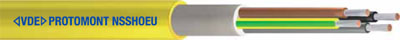
Gummischlauchleitungen der Bauart NSSHÖU sind bestimmt für den beweglichen Anschluss von Betriebsmitteln mit elektromotorischen Antrieb:
Diese Leitungsausführung:
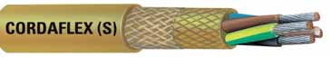
Gummischlauchleitungen der Bauart NSHTÖU sind bestimmt für den Einsatz als trommelbare Anschluss- und Steuerleitungen in Hebezeugen, Förderanlagen und Transportanlagen bei starker mechanischer Beanspruchung.
Diese Bauart ist weitgehend beständig gegen Säuren, Laugen und Öle sowie als Trossen-, Trommel- oder Schleppleitung in trockenen, feuchten und nassen Räumen und im Nutzwasser geeignet.
Sie wird erforderlich bei häufigen Auf- und Abwickelvorgängen mit gleichzeitiger Zug- und/oder Torsionsbeanspruchung und zwangsgeführter Leitung, wie es bei Leitungswagen, Leitungsketten, Trommeln und sonstigen mechanischen Einrichtungen möglich ist.
Die einzeln isolierten Außenleiter sind miteinander verseilt. Der Schutzleiter ist konzentrisch um die verseilten Außenleiter angeordnet.
Beispiel: NTSCGEWÖU (6 – 10 kV)
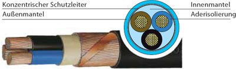
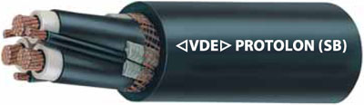
Die einzeln isolierten Außenleiter sind miteinander verseilt. Ein Drittel des Schutzleiterquerschnittes wird einzelkonzentrisch über der Isolierung der einzelnen Außenleiter angeordnet.
Beispiele: NTSCGECWÖU, N3GHSSYCY, u.a.
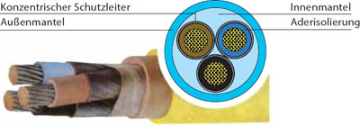
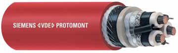
Diese Hochspannungsleitung ist als trommelbare Zuleitung für Tunnelvortriebsmaschinen im Bergbau unter Tage und für den Einsatz auf Tunnelbaustellen geeignet.
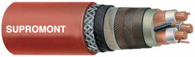
Das Kabel wird vorwiegend als Zuleitung für Vortriebsmaschinen und rückbare Hochspannungsgeräte im Tunnelbau (nach VDE 0118//ÖVE E 18) eingesetzt und verfügt über einen einzelkonzentrischen Schutzleiter und einen Überwachungsleiter.
Für den Anschluss und die Verlängerung dieser Leitungsarten sind spezielle Endverschlüsse erforderlich.
Bei Verwendung von Kabeln und Leitungen mit Leitschichten sind die Kabelenden mit speziellen Endverschlüssen für die gewählte Verbindungstechnik auszuführen. Die Herstellung dieser Endverschlüsse darf nur durch unterwiesenes Fachpersonal erfolgen.
Bei Transport und Lagerung sind die offenen Leitungsenden gegen das Eindringen von Feuchtigkeit zu schützen.
Der erforderliche Leiterquerschnitt wird aus folgenden Daten ermittelt:
In Abhängigkeit der Leitungslänge ist der Leiterquerschnitt unter Berücksichtigung des zulässigen Spannungsfalls auf der Übertragungsstrecke zu berechnen. Der Leiterquerschnitt ist an die Anforderungen anzupassen und gegebenenfalls kann die Nennbetriebsspannung erhöht werden.
Überprüfung der Strombelastbarkeit entsprechend den Verlegebedingungen.
Nach der Ermittlung des Leiterquerschnittes sind die für die jeweiligen Verlegebedingungen geltenden Umrechnungsfaktoren der Strombelastbarkeit zu beachten.
Der sich aus Leistung und Spannung ergebende Nennstromder Anlage bestimmt maßgeblich den erforderlichen Leiterquerschnitt. Die zulässige Strombelastbarkeit der ausgewählten Kabel und Leitungen ist darauf hin zu überprüfen und der Leiterquerschnitt gegebenenfalls anzupassen (siehe VDE 0298 und Herstellerangaben).
Folgende Faktoren beeinflussen die Strombelastbarkeit:
Die Leiterquerschnitte sind für den jeweiligen Belastungsfall zu ermitteln; dabei sind die unterschiedlichen Umrechnungsfaktoren (siehe VDE 0298) zu berücksichtigen.
Bei Aussetz- und Kurzzeitbetrieb dürfen Kabel und Leitungen höher belastet werden als bei Dauerbetrieb.
Für die verschiedenen Kabel und Leitungsarten werden von den Herstellern Grenztemperaturen angegeben. Die Temperaturgrenzwerte an der Kabel- oder Leitungsoberfläche sind so vorgegeben, dass bei der zwangsweisen Führung von Kabeln und Leitungen, insbesondere beim Schleppen über Grund und bei Trommelung, ein problemloser und störungsfreier Betrieb gewährleistet ist.
Werden Kabel und Leitungen einer Strahlung, z.B. Sonnenlicht, ausgesetzt, so kann die Temperatur des Außenmantels auf bedeutend höhere Werte als die Umgebungstemperatur ansteigen. Diesem Umstand muss durch Anpassung der Strombelastbarkeit Rechnung getragen werden. Die angegebenen Werte dürfen in keinem Fall, z. B. durch das Zusammenwirken der in der Leitung bei Betrieb entstehenden Wärme und der Umgebungstemperatur, überschritten werden.
Alle Isolier- und Mantelwerkstoffe von Kabeln und Leitungen werden mit fallender Temperatur steifer. Bei Absinken unter die festgelegte untere Grenztemperatur können die verwendeten Werkstoffe verspröden und an Flexibilität verlieren.
Leitungsroller müssen mit Leitungen vom Typ H07RN-F oder einer mindestens gleichwertigen Bauart ausgerüstet und nach den Festlegungen für schutzisolierte Betriebsmittel gebaut sein.
bedeutet, dass Konstruktionsteile, in denen sich elektrische Betriebsmittel, z.B. Steckvorrichtungen, Thermoschalter, Fehlerstrom-Schutzeinrichtungen (RCD) befinden, von anderen elektrisch leitfähigen Konstruktionsteilen durch doppelte oder verstärkte Isolierung getrennt sind und elektrisch leitende Verbindungen zwischen dem Schutzleiter der Steckvorrichtungen und anderen elektrisch leitfähigen Konstruktionsteilen nicht vorhanden sind.
Tragegriff, Kurbelgriff und Trommelgehäuse müssen aus Isolierstoff bestehen oder mit Isolierstoff umhüllt sein.
Damit soll verhindert werden, dass eine gefährliche Berührungsspannung von einer möglicherweise beschädigten Leitung auf diese Konstruktionsteile übertragen wird.
Leitungsroller müssen mit einer Überhitzungs-Schutzeinrichtung ausgerüstet sein.
Bei Anschluss von Betriebsmitteln mit zusammen mehr als 1000 W Leistung ist der Leistungsroller im abgewickelten Zustand zu benutzen.
Leitungsroller müssen eine ausreichende mechanische Festigkeit für den Einsatz unter erschwerten Bedingungen aufweisen und mindestens der Schutzart IP X4 genügen.
Einsatz unter erschwerten Bedingungen (rauer Betrieb ) bedeutet Einsatz unter hohen mechanischen Beanspruchungen oder bei tiefen Temperaturen (bis - 25 °C).
) bedeutet Einsatz unter hohen mechanischen Beanspruchungen oder bei tiefen Temperaturen (bis - 25 °C).
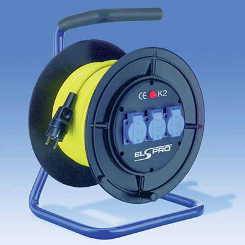
Die Verbindung von Leitungen und Kabeln erfolgt mittels
Klemmkästen stehen für Hochspannung (Farbe rot) und Niederspannung (Farbe gelb) aus dem Bergbauanwendungsbereich zur Verfügung. Sie sind besonders für den rauen Tunnel-Baubetrieb geeignet und in ex-gefährdeten Bereichen anwendbar.
Es muss sichergestellt sein, dass Klemmkästen für Hochspannungsverbindungen nur im spannungslosen Zustand geöffnet werden können.
Dies kann z.B. dadurch erreicht werden, dass der mitgeführte Überwachungsleiter beim Öffnen des Deckels durch einen Sicherheitsschalter unterbrochen wird. Die dadurch hervorgerufene Unterbrechung des Schutzleiter-Überwachungskreises löst den vorgeschalteten Hochspannungsschalter aus. Die Wiedereinschaltung ist erst bei geschlossenem Deckel möglich.
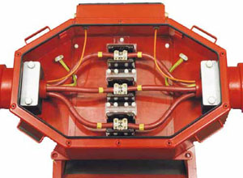
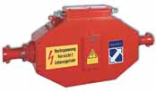
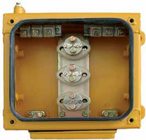
Die Steckvorrichtungen sind entsprechend den Einsatzbedingungen und technischen Vorschriften auszuwählen.
Zur schnellen Trennung und Verbindung von flexiblen Hochspannungsleitungen können Steckvorrichtungen eingesetzt werden. Die Steckvorrichtungen dürfen nur im spannungsfreien Zustand getrennt werden können. Dies kann z.B. erreicht werden durch voreilende Pilotkontakte, die bei Trennung den Überwachungsstromkreis trennen und den vorgeschalteten Hochspannungsschalter auslösen. Die Wiedereinschaltung darf erst bei geschlossenem Überwachungsstromkreis möglich sein.
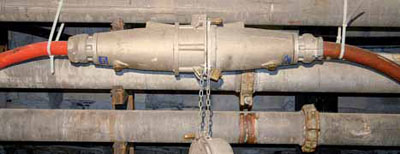
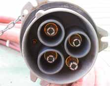
Verschiedene geeignete Steckvorrichtungen unterschiedlicher Bauart stehen zur Verfügung. Sie dürfen nur bis zu einem Nennstrom von 250 A unter Last getrennt werden. Darüber hinaus ist eine Trennung nur im lastfreien Zustand zulässig. Dies kann durch geeignete technische Maßnahmen gewährleistet werden, z.B. durch Drehtrennung oder voreilende Pilotkontakte.
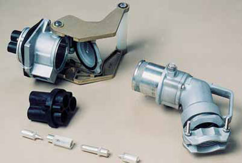
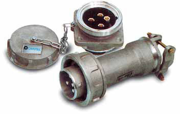
Gießharz-Armaturen für Verbindungsmuffen, Abzweiggarnituren und Endverschlüsse stehen für jede Leitungs- und Kabelgröße sowie für verschiedene Spannungsbereiche zur Verfügung.
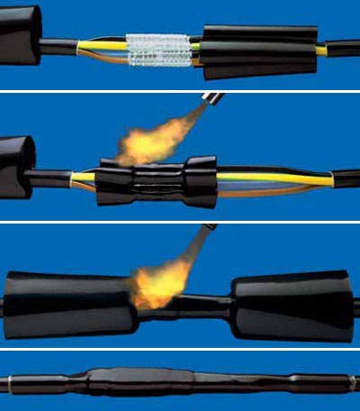
Neben Gießharzmuffen stehen auch so genannte Schrumpfmuffen zur Verfügung. Bei diesem Verfahren wird ein Schrumpfschlauchset über die zu verbindenden Adern und den Außenmantel geschoben und durch Erwärmung (Heißluftgebläse, Benzin- o. Gasbrenner) geschrumpft. Mit dieser Methode können auch äußerlich beschädigte Kabel und Leitungen repariert werden.
Die Anschlüsse müssen zugentlastet sein. Der Schutzleiter muss mit Längenvorgabe angeschlossen werden, damit bei unzulässiger Zugbelastung der Leitung der Schutzleiter als letzter Leiter unterbrochen wird. Kabel und Leitungen müssen gegen Abknickungen durch geeignete Einführungen und Anschlusstrompeten geschützt werden.
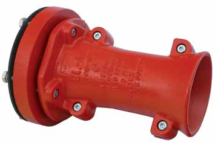
Anschlusstrompete